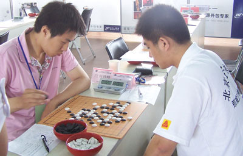

【有志注：李一也就是本站坛友熟悉的屏蔽，此次代表那威俱乐部参加了2008第二届全国团体赛，本文首发于中国连珠网，原文地址：http://www.rifchina.com/Article/ShowArticle.asp?ArticleID=4926】
这次团体赛无论从总体还是个人来看都很不满意，原因是多方面的，主观来讲主要是没有摆正自己或对手的位置，走出了一些莫名其妙的手段；客观而言对手的实力确实比较强大，即使发挥较好也不一定能保证争冠。浙江此次卫冕，是出乎我的意料之外的（虽然我的预感一直比较差），尤其是在他们第三轮完败给我们队之后，但浙江队不屈不挠凭借顽强的实力拿到了冠军，也实在令人尊敬。上海2队比较令人惋惜，但相信明年又会有更强的实力，而我们也同样会努力，毕竟本次比赛确实发现了很多问题，希望今年的失败能成为明日成功的基石。
以下我的自战棋评仅从单独一盘棋的角度来分析。
第二届全国五子棋团体赛第一轮，河北石家庄诺亚人力资源公司多功能厅
斜月局（不换），5A=f9，李一（黑）胜郭睿（白）
浦月定式不熟，该输而没输的一局，7-8正着，8-13简单防。10之后黑11通1-1，2-4，3-5，4-10，5-3，6-6，7-7，8-2，9-11，10-8，11-9的恒星必胜变化，白棋无防。
第二届全国五子棋团体赛第二轮，河北石家庄诺亚人力资源公司多功能厅
瑞星局（不换），5A=i9，陈靖（黑）和李一（白）
（棋谱不全）
白12的变化，16-17正常，实战少交换一手，19后黑大优，21好手，以下局面白棋困难，但黑棋终于没攻下来……黑47控制空间的防守，48后黑简单防住，之后双方无棋。对手防得天衣无缝，不亚于久经战阵的棋手，实力很强！
第二届全国五子棋团体赛第三轮，河北石家庄诺亚人力资源公司多功能厅
瑞星局（不换），5A=i9，李一（黑）胜易海立（白）
参考吴镝的棋谱至白42，这个变化传鹰并不熟悉，所幸中途无甚分支，也无可错之处。43-j12强？实战44好防守！黑棋在右下虚张声势，眼见赢棋无望，黑53是最后一手，此时戏剧性的场面发生了：54-i13不难计算的唯一防，但传鹰看到了连我自己都忽视的实战白54，黑57的胜法有趣，实战中能看到，也算幸运。54-m13，55-55，57-l13黑棋同样必胜。
第二届全国五子棋团体赛第四轮，河北石家庄诺亚人力资源公司多功能厅
疏星局（不换），5A=g7，张轶峰（黑）和李一（白）
（黑57手顺序可能有误）

此局虽为和棋，但进程最为满意！参考吴镝在世锦赛上的黑23，白24积极的一手！黑25~32的交换于黑棋是否有必要？白28一手看来不交换为好。黑33之后感觉白棋有机会，但始终脱离不开右下局部的形势，白36后以为白棋已经必胜，竟忽略了黑37的强防！38-45，39-42，40-41白棋可以争先，但无后续手段，何况目前白棋还是先手，不妨从长计议，只可惜之后双方都处在时间的压力下，各种陷阱也被一一化解，均无建树。
第二届全国五子棋团体赛第五轮，河北石家庄诺亚人力资源公司多功能厅
斜月局（交换），5A=j7，李一（黑）和李洪斌（白）
放弃二打，因为难以避免和棋。定式至白18，黑19莫名一手，之后是很受教的一局……至黑23无奈的防守，黑27的选择是避免白棋在左上势力过强，黑31并未多想，局后分析36-37白必胜，实战至黑39感觉基本稳定，白40、46妙手连发，黑棋完全没有机会……李洪斌老师的水平完全在我之上，如果选择可以与之力战的局面，恐怕结果不会这么乐观。
第二届全国五子棋团体赛第六轮，河北石家庄诺亚人力资源公司多功能厅
名月局（交换），5A=f9，刘昊（黑）负李一（白）
幸运的一局，本以为黑15后这盘将很艰难。至此，正式比赛中该局面我保持全胜。
第二届全国五子棋团体赛第七轮，河北石家庄诺亚人力资源公司多功能厅
瑞星局（不
 屏蔽在感觉优势的时候很容易出现错误判断哈，这点需要加强，希望再接再厉，今后取得很好的成绩。
屏蔽在感觉优势的时候很容易出现错误判断哈，这点需要加强，希望再接再厉，今后取得很好的成绩。